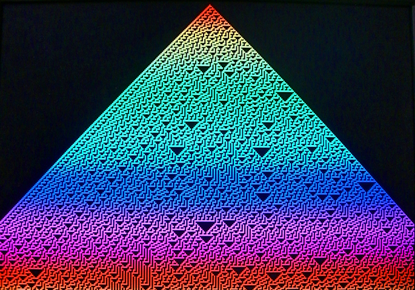

ECE 5760: Laboratory 1
1-dimensional Cellular Automaton (CA).
Introduction.
In this assignment you will build a circuit which runs a state machine to compute and display a binary, nearest-neighbor, one-dimensional CA on a VGA monitor. The DE2 switches will be used to enter the rule number.
Procedures:
- You must handle the boards only on on the ESD mat. These boards are expensive
and you must be careful of them.
- Make sure the Altera DE2 board is connected to power and to the PC as specified
in the board description. Turn
on the power supply with the red switch on the board. Make sure the toggle
switch on the left edge of the board marked (
Run/Prog) is in
the Run position and leave it there at all times. The
FPGA will program in the Run position. Putting the switch in
the Prog position writes your design to flash memory, which
you do not want to do.
- QuartusII does not recognize any project file with a SPACE character in the path name. This includes "my documents", "lab user", etc. The error thrown is obscure, as usual: "can't modify project database".
Always store your project on your Z drive or a flash drive, never on the C drive.
- The default top level module for the
DE2 defines all of the logical i/o signals from the FPGA. A cleaned
up version of the top module was written by Jordan Crittenden (2008).
A complete project
template by
Adam Shapiro (2009) has a cleaned version of the top-level module, the pin assignments,
and an empty project. I suggest that you use Adam's version.
- A student (Skyler Schneider 2010) has written an improved VGA control module. His useage notes:
- Suppose an outer module M instantiates the VGA_Controller module with clock signal VGA_CTRL_CLK. oCoord_X and oCoord_Y specify a pixel. Upon a rising edge of VGA_CTRL_CLK, signaling a new clock cycle, their values are set. During that next clock cycle, module M should use the values of oCoord_X and oCoord_Y to determine what the color of that pixel should be, but module M should not yet report that color back to VGA_Controller. After the next rising edge of VGA_CTRL_CLK, module M should assert the values of iRed, iGreen, and iBlue. Upon the next rising edge of VGA_CTRL_CLK after that, the VGA_Controller buffers the asserted RGB input and reports it to the VGA screen. So, the timing goes like this:
- TICK oCoord_X and oCoord_Y are set.
- TICK iRed, iGreen, and iBlue are set.
- TICK oVGA_R, oVGA_G, and oVGA_B are set. The process is pipelined, so the current values of iRed, iGreen, and iBlue will not correspond to the current values of oCoord_X and oCoord_Y, nor the current value of oVGA_R, oVGA_G, and oVGA_B.
- Although the calculation of oAddress should be correct theoretically, I did not use it in Lab 1 and therefore did not test it.
- The behavior when using iCursor inputs has not been tested and may be incorrect.
- The timing parameters specified in VGA_Param.h have been modified from their previous values to better work with the DELL screens in lab. The front and back porch lengths have been changed to try to center the screen at default settings. The horizontal sync pulse length has also been shortened, which helps remove some jitter.
- You can define the mapping from logical signal to FPGA pins (pin assignment in
QuartusII) for all the pins at once by importing this
file using the menu item
Assignments... Import Assignments... and
specifying the file name. There is no need to define pins one-by-one. And
a note about pin assignments:
Here is the reason why PIN_AE24 will not assign. The physical pin on
the cyclone chip corresponding to PIN_AE24 is a dual-purpose pin. Quartus
must be told to use this as regular i/o (instead of a programming pin)
after programming.
Solution:
In quartus go to--
Assignments >> Device...
Device and Pin Options...
Dual-Purpose Pins (tab)
choose: "Use as regular i/o" for entry: nCEO
Solution was adapted from here:
http://forum.eaw.com.cn/thread/7617/1
Tony Tsang
- Read the Altera tutorial on
using Verilog with QuartusII.
- You may want to use the QuartusII SignalTap tool to verify your design.
Here are the steps that seem to be necssary to get SignalTap working. For
more information, read the Altera tutorial on
using SignalTap, an on chip logic analyzer.
- Choose menu
Tools>SignalTap
- In the main SignalTap window, click
Hardware Setup... (in
the upper rigtht corner)
and in the dialog box choose the hardware (USB-Blaster)
- Choose menu
Edit>AddNodes...
- Choose the appropriate
Filter to simplify the list
of nodes, the press List
- Highlight nodes and move to right-hand list using
> button
- Click
OK to get back to main SignalTap window
- In the main SignalTap window, click the
Clock ... button
and choose the clock signal as in AddNodes
- In the node panel of the main window, set up trigger conditions.
- Compile and then load the design onto the FPGA
- In the main SignalTap window, toggle the
Data/Setup button
- Choose menu
Processing >Run Analysis
- You will probably want to look through the VGA examples on the VGA examples page to see one way of designing a memory state machine. Notice that you need to set up the address one cycle (at 27 MHz) before you read the data. The 61LV25616 SRAM memory data sheet suggest that it requires <20 nS to set up.
Student Examples
Rohan Sharma and Tejas Sapre (Fall 2010) added hue interpolation to their state machine, coding generation number.

Assignment
- You will design the system in Verilog and compile it to the FPGA using QuartusII.
Don't use schematic entry or VHDL.
- KEY0 will reset the state machine. The state machine will run at VGA clock rate.
- The VGA resolution must be at least 640x480.
- The initial state of the CA should be shown at the top of the VGA screen, each succeeding state should be shown on the next video line below.
- When the screen fills, the CA should stop until KEY3 is pressed, then exactly one more screen should be filled as if time is proceeding.
In other words, the bottom line of the screen N should be copied to the top line of screen N+1, and used as the initial condition to refill the screen.
- There should be no flickering, tearing, or other video artifacts caused by your state machine.
- The initial state will be exactly one cell at the center, top of the screen, or a random binary vector across the top of the screen.
- The initial state (seed or random) will be entered using SW17 and cannot be changed except at reset.
- The CA rule will be entered in binary on SW[7:0] and cannot be changed except at reset.
- As mentioned below, compare CA rules to natural phenomena.
- Do not build a general purpose CPU for this lab.
Be prepared to demo your design to your TA in lab.
Your written lab report should include the sections mentioned in the policy page, and :
- An RTL (register transfer level) block diagran of your design.
- A state-transition diagram for the main CA update state machine.
- A photograph of the VGA screen showing the evolution of an interesting CA.
- A comparison of 1D cellular automata with natural phenomena.
- A heavily commented listing of your Verilog design.
Copyright Cornell University
February 1, 2016